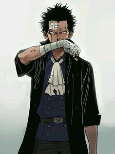

Les humain sont les êtres les plus nombreux et qui peuple 95% de cette planète
La faiblesse des êtres humains dans le monde de One Piece fait qu'ils sont souvent vu comme faibles par d'autres races cela conduit les hommes à se venger en prenant une attitude raciste envers les autres espèces et de faire couler le sang a flot